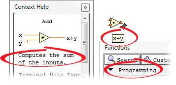
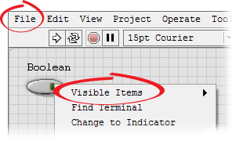
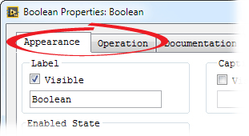

LabVIEW uses fonts already installed on the computer. Use the Text Settings pull-down menu on the toolbar to change the attributes of text.
The Text Settings pull-down menu contains the following built-in fonts.
|
Note��The following screenshots do not depict the default fonts, but instead use alternative fonts in order to demonstrate where content is affected by changing the Application, System, and Dialog fonts. |
| Application Font�Default font used for text in the following locations: |
 |
| System Font�Default font used for text in the following locations:
|
 |
| Dialog Font�Default font used for text in the following locations:
|
 |
If you select objects or text before you make a selection from the Text Settings pull-down menu, the changes apply to everything you select. If you select nothing, the changes apply to the default font. Changing the default font does not change the font of existing labels. It affects only those labels you create from that point on.
Select Font Dialog from the Text Settings pull-down menu on the front panel to apply specific font styles to text you have selected. If you do not select any text, the Panel Default option contains a checkmark. If you select Text Settings�Font Dialog from the block diagram without selecting any objects, the Diagram Default option contains a checkmark. You can set different fonts for the front panel and for the block diagram. For example, you can have a small font on the block diagram and a large one on the front panel.
When you transfer a VI that contains built-in fonts to another platform, the fonts correspond as closely as possible.
 |
Tip��Right-click the text and select Size to Text from the shortcut menu to automatically adjust for font differences between platforms. |
The Text Settings pull-down menu also has Size, Style, Justify, and Color submenu items.
Font selections you make from any of these submenus apply to objects you selected. For example, if you select a new font while you have a knob and a graph selected, the labels, scales, and digital displays all change to the new font.
LabVIEW preserves as many font attributes as possible when you make a change. For example, if you select an object that uses bold Courier font and then select Arial from the Text Settings pull-down menu, the object retains the bold font attribute as bold Arial font. If you use the Font Style dialog box to configure selected objects, LabVIEW applies the text characteristics you select to the objects. Text characteristics include Font, Size, Align, Color, and the font attributes. If you select one of the built-in fonts, such as Application Font, System Font, or Dialog Font, to apply to the selected objects, LabVIEW applies the text characteristics of the built-in font to the selected objects.
|
Note��(MathScript RT Module) LabVIEW discards color and style settings you apply to text in a MathScript Node when a type of script highlighting is enabled for the node. |
When you work with objects that have multiple pieces of text, like slides, font changes you make affect the objects or text you currently have selected. For example, if you select the entire slide and select Style�Bold from the Text Settings pull-down menu, the scale, digital display, and label all change to a bold font. If you select only the label and select Bold, only the label changes to a bold font. If you select text from a scale marker and select Bold, all the markers change to a bold font.
You should use standard, consistent fonts to design a user interface that is easy to use.